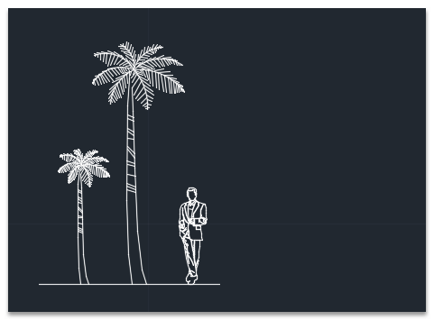
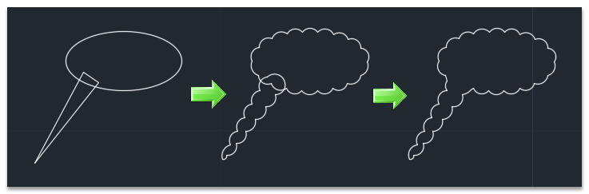

任務：請繪製出以下多邊雲形線，文字方面請大家發揮創意，可以自由發表，最具創意的朋友們可以獲得積分+1喔。

※每個人及公司的作法均不同，希望大家可以先分享自己的作法，再來看以下我分享的方式！
練習完成後請說明「步驟」、「貼圖」，回答的會員朋友可以得到（威望值 +6）。
下載： https://app.box.com/s/x6asy6umyam2c1f6fiaqs233bb6gzmmu
備用： https://www.dropbox.com/s/7pftoudnfhhtgoy/CloudTset.zip?dl=0
可使用「雲形線」revcloud指令完成。步驟參考：

註： AutoCAD 2016 版本「雲形線」有更方便的方式，但是現在有「保密協議」約束，等 AutoCAD 2016版本推出之後再跟大家分享囉。
AutoCAD 2016 修訂雲形線新功能